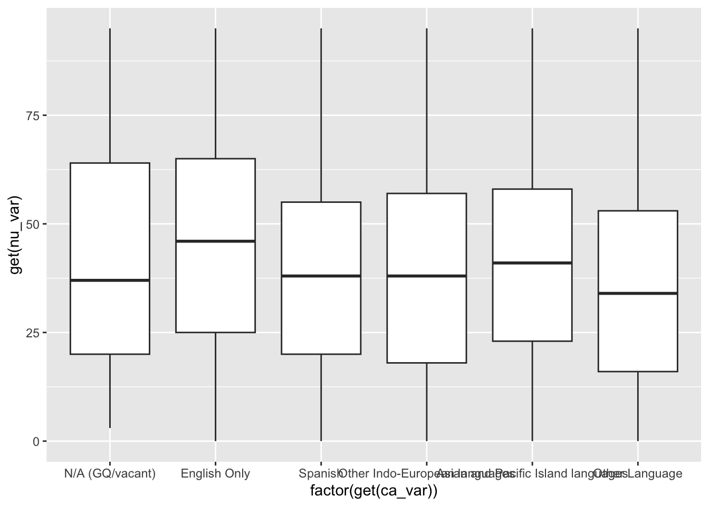

#introduction In this project, we write functions to get data from the Census API, clean data and summarize it. Each row has a weight showing how many people it represents, so our summaries and plots use this weight. Finally, we use some case to test the functions and explore some patterns.
store API
We store the API here and keep it secert.
library(httr)
Warning: package 'httr' was built under R version 4.5.2
library(jsonlite)library(jsonlite)# Store the API as an environment variable and reference it when access data.Sys.setenv(API_KEY ="b8e505a6fa8a9e78a5c7cbcf0bac66162486d10e")library(lubridate)
Warning: package 'lubridate' was built under R version 4.5.2
Attaching package: 'lubridate'
The following objects are masked from 'package:base':
date, intersect, setdiff, union
library(dplyr)
Attaching package: 'dplyr'
The following objects are masked from 'package:stats':
filter, lag
The following objects are masked from 'package:base':
intersect, setdiff, setequal, union
library(quantreg)
Loading required package: SparseM
After trying the API using 2024 data, we write a function to request the API, parse the JSON, and pull out the variable dictionary.
$`@context`
[1] "https://project-open-data.cio.gov/v1.1/schema/catalog.jsonld"
$`@id`
[1] "http://api.census.gov/data/2024/acs/acs1/pums.json"
$`@type`
[1] "dcat:Catalog"
$conformsTo
[1] "https://project-open-data.cio.gov/v1.1/schema"
$describedBy
[1] "https://project-open-data.cio.gov/v1.1/schema/catalog.json"
$dataset
c_vintage c_dataset
1 2024 acs, acs1, pums
c_geographyLink
1 http://api.census.gov/data/2024/acs/acs1/pums/geography.json
c_variablesLink
1 http://api.census.gov/data/2024/acs/acs1/pums/variables.json
c_tagsLink
1 http://api.census.gov/data/2024/acs/acs1/pums/tags.json
c_examplesLink
1 http://api.census.gov/data/2024/acs/acs1/pums/examples.json
c_groupsLink
1 http://api.census.gov/data/2024/acs/acs1/pums/groups.json
c_sorts_url
1 http://api.census.gov/data/2024/acs/acs1/pums/sorts.json
c_documentationLink c_isMicrodata c_isCube c_isAvailable
1 https://www.census.gov/developer/ TRUE TRUE TRUE
@type
1 dcat:Dataset
title
1 2024 American Community Survey: 1-Year Estimates - Public Use Microdata Sample
accessLevel bureauCode
1 public 006:07
description
1 The American Community Survey (ACS) Public Use Microdata Sample (PUMS) contains a sample of responses to the ACS. The ACS PUMS dataset includes variables for nearly every question on the survey, as well as many new variables that were derived after the fact from multiple survey responses (such as poverty status). Each record in the file represents a single person, or, in the household-level dataset, a single housing unit. In the person-level file, individuals are organized into households, making possible the study of people within the contexts of their families and other household members. Individuals living in Group Quarters, such as nursing facilities or college facilities, are also included on the person file. ACS PUMS data are available at the nation, state, and Public Use Microdata Area (PUMA) levels. PUMAs are special non-overlapping areas that partition each state into contiguous geographic units containing roughly 100,000 people each. ACS PUMS files for an individual year, such as 2024, contain data on approximately one percent of the United States population.
distribution
1 dcat:Distribution, http://api.census.gov/data/2024/acs/acs1/pums, API endpoint, API, application/json, API endpoint
contactPoint.fn contactPoint.hasEmail
1 American Community Survey Office mailto:acso.users.support@census.gov
identifier keyword
1 https://api.census.gov/data/id/ACSPUMS1Y2024 census
license modified
1 https://creativecommons.org/publicdomain/zero/1.0/ 2025-07-30 17:19:40.0
programCode references spatial temporal
1 006:004 https://www.census.gov/developers/ US 2024/2024
publisher.@type publisher.name publisher.subOrganizationOf.@type
1 org:Organization U.S. Census Bureau org:Organization
publisher.subOrganizationOf.name
1 U.S. Department Of Commerce
publisher.subOrganizationOf.subOrganizationOf.@type
1 org:Organization
publisher.subOrganizationOf.subOrganizationOf.name
1 U.S. Government
census_api <-function(year) {# set url with input "year"url <-paste0("https://api.census.gov/data/", year, "/acs/acs1/pums")response <-GET((url),query =list(key=Sys.getenv("API_KEY")))### obtain JSON textcontent <-content(response, as ="text", encoding ="UTF-8")### parse the returnresult <-fromJSON(content, flatten =FALSE)### according to the returned content we parsed, we know the address of variables codebook is in c_variablesLink variable <-fromJSON(content(GET(result$dataset$c_variablesLink,query =list(key=Sys.getenv("API_KEY"))), as ="text",encoding ="UTF-8"),flatten =FALSE)### set the variables we need in each yearvar_state <-if (year %in%c(2021,2022)) "ST"else"STATE"var_selected <- variable$variables[c("AGEP", "GASP", "GRPIP", "JWAP", "JWDP", "JWMNP", "PWGTP", "FER", "HHL", "SCH", "SCHL", "SEX", var_state,"REGION", "DIVISION")]return(var_selected)}### apply function in eachyear variable_2021 <-census_api(2021)variable_2022 <-census_api(2022)variable_2023 <-census_api(2023)variable_2024 <-census_api(2024)alldata <-list(variable_2021, variable_2022, variable_2023, variable_2024)names(alldata) <-c("2021","2022","2023","2024")saveRDS(alldata, file ="data/allyears.rds")
Parsing API Data
In this section, we first test a simple API call for Florida in 2024 to see what the raw data looks like. We created “transfer_tibble”, which is a helper function turns the API response into a tibble, using the first row as column names. We created time_midpoint (with the help of LLM) to turn time ranges (like “7:00 a.m. to 7:04 a.m.”) into the midpoint time. We create query_census, which is our main function. It checks the user’s inputs, calls the API, and returns a clean tibble with numbers, times, and factortype variabes.
## helper transfer_tibble <-function(response) { data_content <-content( response,as ="text",encoding ="UTF-8" ) result <-fromJSON(data_content)#deal with colmmn_names column_names <- result[1, ] result <- result[-1, , drop =FALSE]colnames(result) <- column_namesreturn(tibble::as_tibble(result))}### turns value into times time_midpoint <-function(labels) {clock_minutes <-function(clock) { clock <-gsub(".", "", clock, fixed =TRUE) parts <-strsplit(trimws(clock), "[: ]+")[[1]] hour <-as.numeric(parts[1]) %%12if (parts[3] =="pm") hour <- hour +12 hour *60+as.numeric(parts[2]) }midpoint <-vapply(labels, function(label) {if (is.na(label) ||!grepl(" to ", label, fixed =TRUE)) {return(NA_real_) } endpoints <-strsplit(label, " to ", fixed =TRUE)[[1]] start <-clock_minutes(endpoints[1]) end <-clock_minutes(endpoints[2])if (end < start) end <- end +1440 ((start + end) /2) %%1440 }, numeric(1))return( lubridate::as_datetime(unname(midpoint) *60, tz ="UTC") )}##set up a query function, and the default value of year is 2024query_census <-function(year =2024,variables =c("AGEP", "PWGTP", "SEX"),geography ="State",geography_values =NULL) {legal_numeric_vars <-c("AGEP", "GASP", "GRPIP", "JWAP", "JWDP", "JWMNP", "PWGTP")legal_categorical_vars <-c("FER", "HHL", "SCH", "SCHL", "SEX")if (!all(variables %in%c(legal_numeric_vars, legal_categorical_vars))) {stop("Invalid variable.")}numeric_vars <- variables[variables %in% legal_numeric_vars]categorical_vars <- variables[variables %in% legal_categorical_vars]if (!"PWGTP"%in% numeric_vars ||length(setdiff(numeric_vars, "PWGTP")) ==0) {stop("Include PWGTP and at least one other numeric variable.")}if (length(categorical_vars) ==0) {stop("Include at least one categorical variable.")} ## Check whether the input year is legalif (length(year) !=1||!year %in%2021:2024) {stop("Year is illegal: Choose one year: 2021, 2022, 2023, or 2024.")}## Check geography levelif (length(geography) !=1||!geography %in%c("Region", "Division", "State")) {stop("Choose one geography level: Region, Division, or State.")}##Read dictionary of the input year'salldata <-readRDS("data/allyears.rds")dictionary <- alldata[[as.character(year)]] ##Choose the geography variable state_var <-if (year %in%c(2021, 2022)) "ST"else"STATE"## ## Set default geography vafiables if (geography =="Region") { geography_var <-"REGION"} elseif (geography =="Division") { geography_var <-"DIVISION"} elseif (geography =="State") { geography_var <- state_var}## Get legal geography codes from the dictionarygeography_labels <-unlist( dictionary[[geography_var]]$values$item)## add default valuesif (is.null(geography_values)) {if (geography =="Region") { geography_values <-"1" } elseif (geography =="Division") { geography_values <-"2" } else { geography_values <-"12" }}geography_values <-as.character(geography_values)# Allow "all" in values, otherwise check the geography codesif (length(geography_values) ==1&&tolower(geography_values) =="all") { geography_codes <-"*"} else {if (length(geography_values) ==0||!all(geography_values %in%names(geography_labels))) {stop("Invalid geography code.") } geography_codes <-paste(geography_values, collapse =",")}### apply api request url <-paste0("https://api.census.gov/data/", year, "/acs/acs1/pums")response <-GET( url,query =list(get =paste(variables, collapse =","),`for`=paste0(tolower(geography), ":", geography_codes),key =Sys.getenv("API_KEY") ))## apply hepler function data_tibble <-transfer_tibble(response)for (variable in numeric_vars) { labels <-unlist(dictionary[[variable]]$values$item) values <-as.numeric(data_tibble[[variable]])if (variable %in%c("JWAP", "JWDP")) { time_labels <- labels[match(values, as.numeric(names(labels))) ] data_tibble[[variable]] <-time_midpoint(time_labels) } else { missing_codes <-names(labels)[grepl("^N/A", labels)] values[values %in%as.numeric(missing_codes)] <-NA_real_ data_tibble[[variable]] <- values }}for (variable in categorical_vars) { labels <-unlist(dictionary[[variable]]$values$item) labels <- labels[order(as.numeric(names(labels)))] data_tibble[[variable]] <-factor(as.numeric(data_tibble[[variable]]),levels =as.numeric(names(labels)),labels =unname(labels) )}class(data_tibble) <-c("census", class(data_tibble))return(data_tibble)data_tibble <-transfer_tibble(response)View(data_tibble)}
Combine years
Now we create a function to allow users to return multiple years’ data and combine them into one tibble based on calling “query_census” function.
query_census_years <-function(years =2024,variables =c("AGEP", "PWGTP", "SEX"),geography ="State",geography_values =NULL) {year_data <-lapply(years, function(year) {### request datacensus_data <-query_census(year = year,variables = variables,geography = geography,geography_values = geography_values )## add year for variables census_data$year <- yearreturn(census_data) })return(dplyr::bind_rows(year_data) |># force year to factor type variable dplyr::mutate(year =factor(year)))}combined_data <-query_census_years(years =c(2021, 2022, 2023, 2024))head(combined_data)
# A tibble: 6 × 5
AGEP PWGTP SEX state year
<dbl> <dbl> <fct> <chr> <fct>
1 47 65 Male 12 2021
2 87 25 Female 12 2021
3 18 3 Male 12 2021
4 78 4 Male 12 2021
5 53 22 Male 12 2021
6 20 47 Male 12 2021
Write summrize functions
Now we have returned a tibble; then we create a generic function for summaries. This function gives the weighted mean and standard deviation for numeric variables and weighted counts for categorical variables.
## we have returned a tibble; then we create a generic function for summaries summary.census <-function( tibble,numeric_vars =NULL,categorical_vars =NULL) {#####check input, find out which variables should be suitable to be summarized. ### if numeric variables are not specified explicitly, find out which variables in the tibble is numerical, and pass this into numeric_vars to prepare for summary. if (is.null(numeric_vars)) { numeric_vars <-names(tibble)[vapply(tibble, is.numeric, logical(1)) ] numeric_vars <-setdiff(numeric_vars, c("PWGTP", "year")) }# Ignore time variablesnumeric_vars <- numeric_vars[!vapply(tibble[numeric_vars], function(x) {inherits(x, c("POSIXt", "difftime")) }, logical(1)) ]## if users didn't input any categorial variables, we take all the factor-type variables in the tibble to summarize. if (is.null(categorical_vars)) { categorical_vars <-names(tibble)[vapply(tibble, is.factor, logical(1)) ]}# Treat year as categorical: if users input year as numeric, we take it into categorical (it has been transferred to factor)if ("year"%in% numeric_vars) { numeric_vars <-setdiff(numeric_vars, "year") categorical_vars <-unique(c(categorical_vars, "year"))}## pass the parameters of which variable and its weight into different kinds of summariy function. numeric_summary <-lapply(numeric_vars, function(variable) { x <- tibble[[variable]] w <- tibble$PWGTP## exclude all the observations with missing values keep <-!is.na(x) &!is.na(w) x <- x[keep] w <- w[keep] sample_mean <-sum(x * w) /sum(w) sample_sd <-sqrt(sum(x^2* w) /sum(w) - sample_mean^2)c(mean = sample_mean, sd = sample_sd) })names(numeric_summary) <- numeric_vars### categorical variables summarize categorical_summary <-lapply(categorical_vars, function(variable) { x <- tibble[[variable]] w <- tibble$PWGTP## exclude the observations with missing values keep <-!is.na(x) &!is.na(w)# apply function on each gorup tapply(w[keep], x[keep], sum, default =0) })names(categorical_summary) <- categorical_varsreturn(list(numeric = numeric_summary,categorical = categorical_summary ))}
plot function
Then we create some plot functions. This function makes a weighted boxplot of one numeric variable across the levels of one categorical variable, which allows us to check the association beween a categorical variable and a numerical variable use their distribution, and it is a description, but not a statistical inference.
plot.census <-function(x, ca_var, nu_var, ...) {## check if users input one numeric and one categorical if (length(ca_var) !=1||length(nu_var) !=1) {stop("Specify only one categorical variable and only one numeric variable.") }## check if users input really categorical, if not, output alarm if (!is.factor(x[[ca_var]])) {stop("ca_var should be categorical.") }## check if users input really numerical, if not, output alarm if (!is.numeric(x[[nu_var]])){stop("nu_var should be numeric.") }## return a plot: create a boxplot of the numeric variable at the levels of the categorical variable.return( ggplot2::ggplot( x, ggplot2::aes(x =factor(get(ca_var)),y =get(nu_var),weight = PWGTP ) ) + ggplot2::geom_boxplot() )}
Test functions
Now we created four main functions: transfer_tibble(), query_census_years, summary.census()、plot.census(). We are going to test them with a case of the association betweem household language (categorical variable), and the age (numerical variable).
### Now we created 4 main functions for later using: query_census_years, summary.census()、plot.census() ## We are going to test them.##set up a query function, and the default value of year is 2024query_1 <-query_census_years(years =c(2021,2022,2023,2024),variables =c("SCHL", "PWGTP", "SEX","AGEP","HHL"),geography ="State",geography_values =12)summary_query_1 <-summary(query_1)summary_query_1
$numeric
$numeric$AGEP
mean sd
42.34749 23.85784
$categorical
$categorical$SCHL
N/A (less than 3 years old)
2542672
No schooling completed
2999224
Nursery school, preschool
1215119
Kindergarten
1029861
Grade 1
935666
Grade 2
1041396
Grade 3
1114520
Grade 4
1082565
Grade 5
1189869
Grade 6
1486075
Grade 7
1215911
Grade 8
1516826
Grade 9
1748387
Grade 10
1831264
Grade 11
2004512
12th grade - no diploma
1784794
Regular high school diploma
17344609
GED or alternative credential
2917453
Some college, but less than 1 year
4964358
1 or more years of college credit, no degree
9294126
Associate's degree
7291175
Bachelor's degree
14793826
Master's degree
5988943
Professional degree beyond a bachelor's degree
1689858
Doctorate degree
985883
$categorical$SEX
Male Female
44264155 45744737
$categorical$HHL
N/A (GQ/vacant) English Only
1853155 54457569
Spanish Other Indo-European languages
23955054 6731660
Asian and Pacific Island languages Other Language
1997275 1014179
$categorical$year
2021 2022 2023 2024
21781128 22244823 22610726 23372215
Warning in rq.fit.br(wx, wy, tau = tau, ...): Solution may be nonunique

From the boxplot, we found that the age distribution is similar in household lanaguge groups, no clear pattern of the association between age and household language.
# A tibble: 6 × 7
PWGTP JWAP JWDP JWMNP SEX state year
<dbl> <dttm> <dttm> <dbl> <fct> <chr> <fct>
1 38 NA NA NA Male 12 2024
2 55 NA NA NA Male 12 2024
3 16 NA NA NA Male 12 2024
4 62 NA NA NA Male 12 2024
5 46 NA NA NA Male 12 2024
6 49 NA NA NA Male 12 2024
summary(query_2)
$numeric
$numeric$JWMNP
mean sd
28.92946 22.74355
$categorical
$categorical$SEX
Male Female
11492766 11879449
$categorical$year
2024
23372215
plot(query_2, ca_var ="SEX", nu_var ="JWMNP")
Warning: Removed 133769 rows containing non-finite outside the scale range
(`stat_boxplot()`).
use division as geography variable.
# Use a different geography level (Division = 1)query_3 <-query_census_years(years =2024,variables =c("PWGTP", "AGEP", "SCH"),geography ="Division",geography_values =1)summary(query_3)
$numeric
$numeric$AGEP
mean sd
41.51816 23.34190
$categorical
$categorical$SCH
N/A (less than 3 years old)
412683
No, has not attended in the last 3 months
11428848
Yes, public school or public college
2662576
Yes, private school or college or home school
881978
$categorical$year
2024
15386085